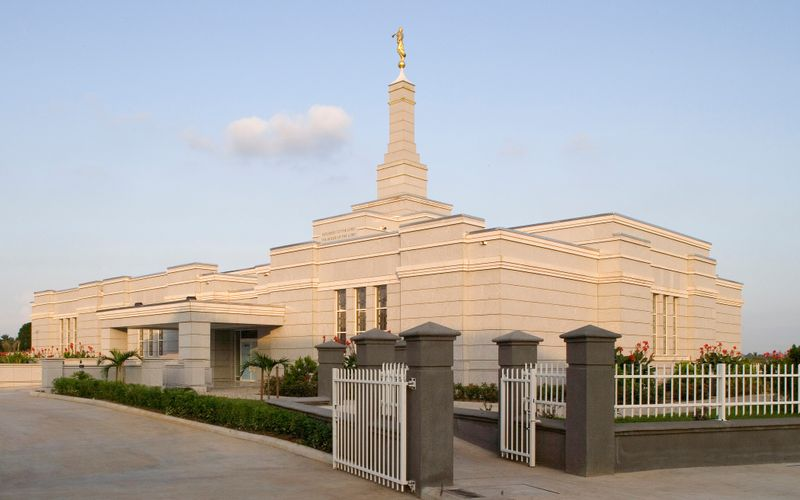
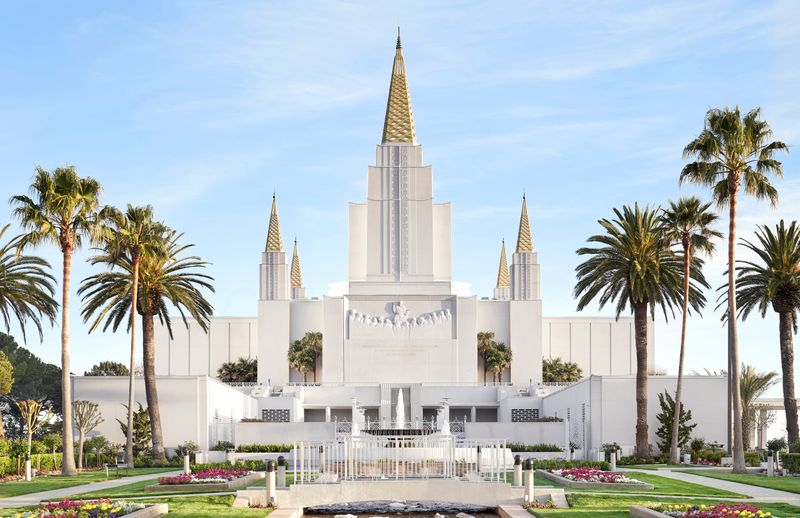
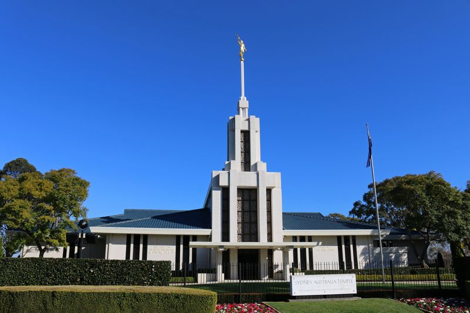
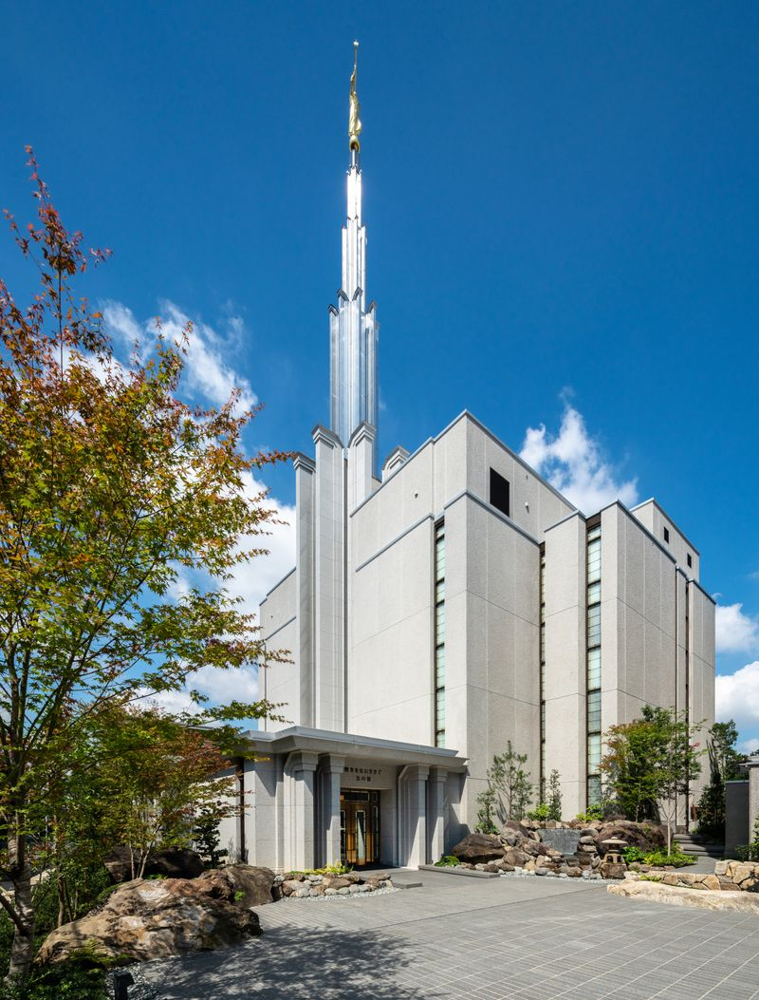

Temple Album
☰
Home
Old
New
Large
Small
Home

Aba Nigeria Temple
Abidjan Ivory Coast Temple
Accra Ghana Temple
Atlanta Georgia Temple

Oakland California Temple
Paris France Temple

Sydney Australia Temple

Tokyo Japan Temple
Wellington New Zealand Temple